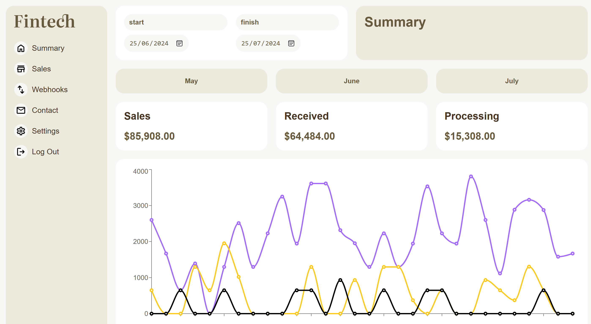
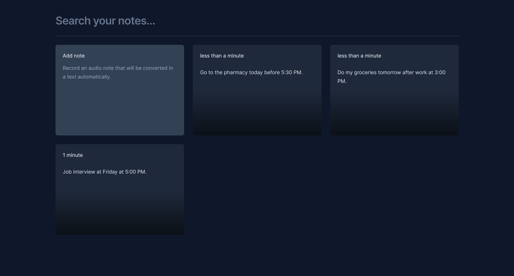
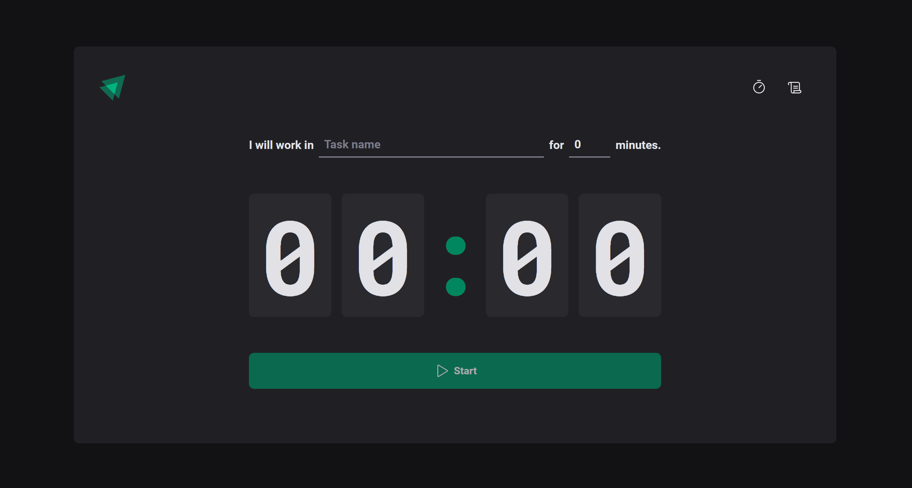
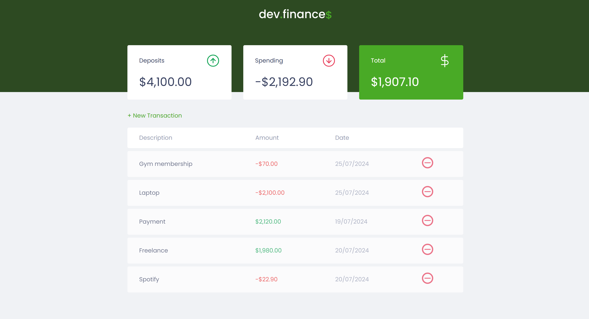

Full-Stack Web Developer
Creating solutions and bringing value to all layers of your project.
Based in Australia 📍
Resume & cover letter clicking here
Experience
Since 2020 I've been working in different types of projects using mostly Javascript - and related tools - to create and improve softwares. Furthermore, I have explored other technologies to provide solutions according to the project requirements.
Toraline Project
Full-stack DeveloperWorked with Typescript (Node and React) to build middleware implementing different bussiness rules, enganging in code reviews and giving improvements to UI using front-end frameworks.
- Git
- Typescript
- NodeJS
- React
- Express
Adulfo Lutz Institute
Full-stack DeveloperWorked with Wordpress, MySQL and JQuery in the clinic's consulting system, where doctors and pacients could see their results. Other tasks included debugging and bug fixes, and implementing SQL queries to filter data.
- Wordpress
- PHP
- MySQL
- Javascript
Muzie Online
Front-end DeveloperWorked in the front-end team building all the UI/UX of the web site, using Next and styled-components. Made connection with different API's, such as payment and registered data, and other features like pagination, feed, CRUD actions and more.
- Typescript
- React
- Next
- CSS (Styled-components)
Projects
Here are some side projects I have built to improve my skills using different technologies with different proposes. On my Github, you can find more projects with documentation and open source code.
-
Front-end
Fintech
 -
Front-end
Notes App with VR
 -
Front-end
Ignite Timer
 -
Front-end
DevFinance

Courses & certificates
- Professional Course Program in Web DevelopmentUECE
- Front-end Development by Meta Coursera
- Front-end Ignite Bootcamp Rocketseat
Languages
- English / Advanced
- Portuguese / Native